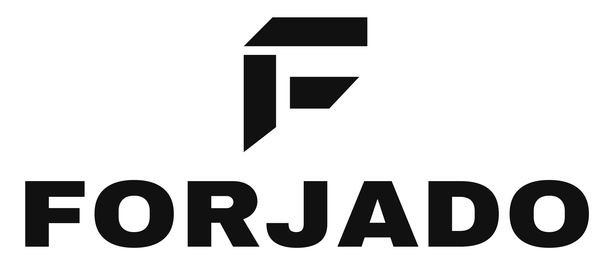
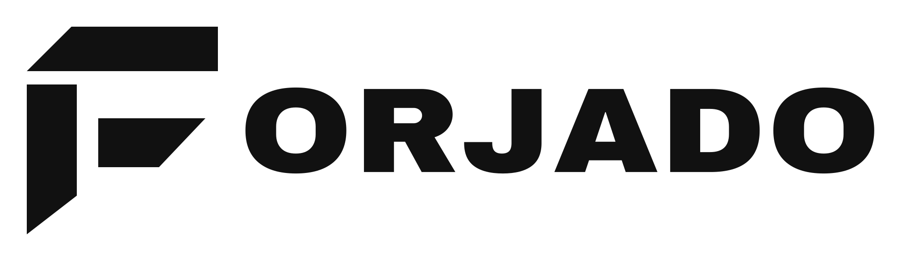
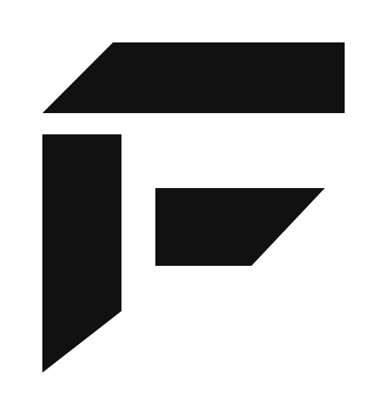
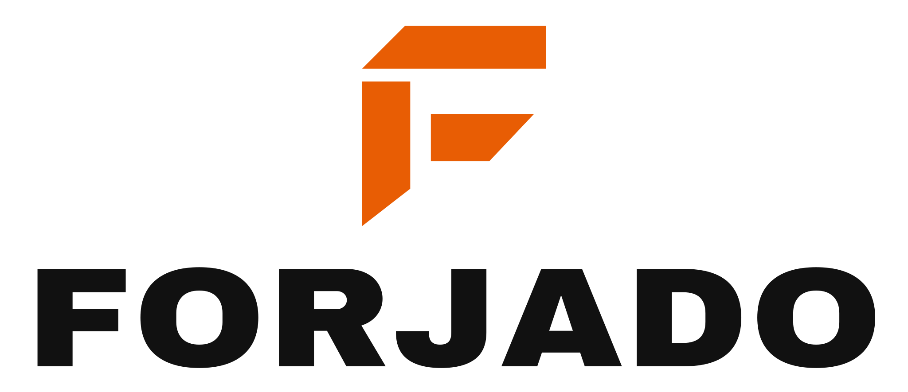
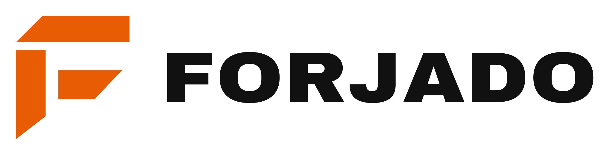

Vista previa de las 10 versiones SVG. Fondo de cada tarjeta = fondo de uso recomendado.

forjado-logo-vertical-color.svg
forjado-logo-vertical-mono.svg
forjado-logo-vertical-invertido.svg
forjado-logo-horizontal-color.svg
forjado-logo-horizontal-mono.svg
forjado-logo-horizontal-invertido.svgforjado-logo-simbolo-color.svgforjado-logo-simbolo-mono.svg
forjado-logo-simbolo-invertido.svgforjado-avatar-circular.svg
forjado-logo-vertical-color-claro.svg
forjado-logo-horizontal-color-claro.svg